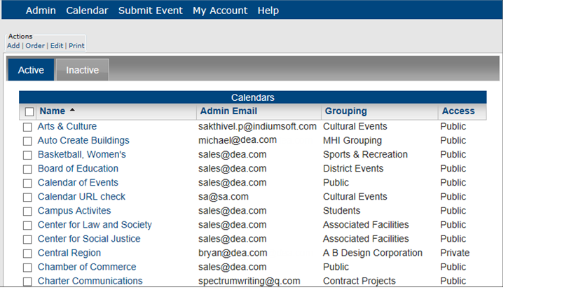

A calendar is the organizational tool that you use to display events in Master Calendar. You can organize and display events on a calendar by days week, month, or year. You can define a calendar as broadly or as narrowly as you need to meet your specific business needs. For example, if you are managing events for a university campus, you could define a calendar for the entire campus, another calendar for a specific college, or even another calendar for a specific department. The maximum number of calendars that you can define is equal to the maximum number of calendars for which your organization is licensed. You can view events for a single calendar, or you can select multiple calendars and view all their events in a single combined calendar. See Also:
TIP: The default settings for Master Calendar determine how the information is displayed for events on a combined calendar. See Also: Setting Default Behavior for Master Calendar.
To add a calendar, at a minimum, you must add the required Details information. Optionally, you can specify the users who have access to the calendar, and you can add user-defined questions (UDQs) for the calendar, or you can add this information at a later date. This topic guides you in creating new calendars and working with existing ones.
The Calendars page opens on the Active tab, listing all currently active calendars in Master Calendar.

| Tab | DESCRIPTION |
|---|---|
Calendar Name | The title or name of the calendar. |
Calendar Status |
|
Calendar Description | A text description of the calendar. |
Grouping | Drop-down list. Available values are all active and inactive groupings currently available in Master Calendar. |
Calendar Manager Name | The name of the person responsible for managing (adding, updating, and editing events, and so on) for the calendar. |
Calendar Manager Email Address | The email for the Calendar Manager. |
Approval Email Address | The email addresses for any additional persons who are responsible for approving or denying requests to submit events to the calendar. Separate multiple email addresses with a comma. |
Calendar Access | Determines who has access to view the calendar:
|
Show Calendar Manager Contact Information | Selected by default. Indicates whether the contact information for the Calendar Manager should appear on the Calendar Managers list. |
| Allow Public Submission of Events | Selected by default. Indicates whether anybody who can view the calendar can submit events to the calendar. |
Show Cancelled Events | Selected by default. Indicates whether canceled events should be displayed on the calendar. |
Subscription | Determines who can subscribe to receive information about additions or modifications to the calendar.
|
When you edit a calendar, not only can you edit information for the calendar (such as the calendar name, the email for the Calendar Manager, and so on), but also, you can activate or de-activate the calendar, and associate users with it.


You can select other tabs to work with those aspects of the calendar:
| Calendar Tab | Enables You To... |
|---|---|
Details | Define basic information about the calendar. |
Users | Associate users with the calendar (this controls whether they can access it in Master Calendar). |
UDQs | Select pre-defined User Defined Questions to prompt users when they work with events on this calendar. |
Event Types | Associate Event Types that can be scheduled on this calendar. |
TIP: To de-activate a calendar, under Calendar status, select Inactive. To activate a calendar, select Active.
To associate a user with a calendar, the user must be classified as a Standard user or less. You cannot add a user to the calendar if the user is defined as an Administrator or higher. A user must be defined in Master Calendar before you can add them to a calendar. See Also: Adding Users.

TIP: The search is limited to the exact order of the characters in the string; however, the search string is not case-sensitive and the search string can be found anywhere in the search results. For example, the search string “clark” returns Clark Davidson, Matthew Clark, and so on.
The user names that match your search criteria and that have not already been assigned to a role for the selected calendar (Viewer, Requestor, and so on) appear in the Users field.
Calendar Access Types Fields
| AREA | DESCRIPTION |
|---|---|
| Viewer | Read Access. The user can only view events on the calendar. |
| Requester | The user can view events on the calendar and submit events to the calendar; however, the submitted event is posted only if approved by the Calendar Manager. |
| Calendar User | The user can view events on the calendar and submit events to the calendar and the events are automatically posted without approval by the Calendar Manager. |
| Calendar Manager | The user can carry out all administration functions for the calendar (edit the calendar, create calender URLs, submit events to the calendar without approval, add/edit/delete special dates, and so on.) |
WARNING: If you do not select a calendar for the user, the calendar is considered to be a private calendar—the user cannot view events on the calendar, submit events to the calendar, and so on.
A user defined question (UDQ) is a pre-defined prompt that displays to users when they book events for this calendar. You can set the prompt as mandatory so that users must answer it before submitting an event to the calendar.
NOTE: A UDQ is pre-defined in Master Calendar and must be defined before you can associate it with a calendar. To add a UDQ to Master Calendar, see Edit User-Defined Questions.

IMPORTANT: To delete a Calendar from Master Calendar, the calendar must be Inactive.
You can generate a Calendars report, which lists all active or inactive calendars configured in Master Calendar.

NOTE: PDF is the default format for exporting to a file. Other allowed formats are Xls, Xlsx, Rtf, Mnt, Text, Image, and Csv.